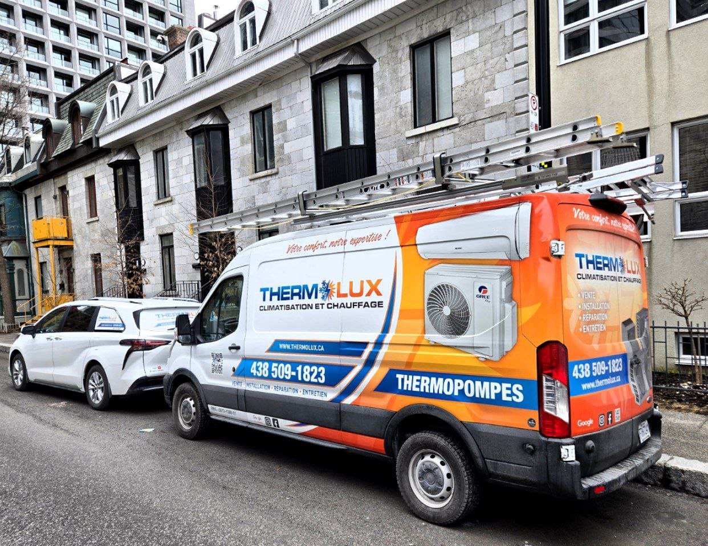

Une entreprise familiale du Grand Montréal
Une jeune entreprise, une équipe qui travaille dans le chauffage, la ventilation et la climatisation depuis plus de 15 ans.
Des techniciens certifiés, un service suivi
Thermolux installe, répare et entretient des systèmes de climatisation et de chauffage résidentiels. Nous prenons le temps de comprendre vos besoins avant de recommander une solution.
Notre équipe travaille avec des équipements de fabricants reconnus et assure un service après-vente : entretien et support pour que votre système performe longtemps.

Ce qui guide chaque projet
Réactivité
Nos techniciens répondent à chaque appel et traitent chaque demande dans les meilleurs délais.
Fiabilité
Nous cherchons la meilleure solution selon vos besoins, et nous assumons chaque projet réalisé.
Respect
Nous installons et réparons des systèmes de toute complexité en gardant vos objectifs en tête.
Un travail propre, une équipe courtoise

Licence RBQ 5812-9388-01Entrepreneur certifié par la Régie du bâtiment du Québec
- Techniciens certifiés
- Installation et entretien par des professionnels licenciés.
- Garantie fabricant et main-d’œuvre
- Votre installation est protégée.
- Service fiable et professionnel
- Une équipe locale, de la soumission à l’entretien.
- Aide pour la subvention LogisVert
- Nous vous accompagnons dans les démarches.
Près de chez vous, dans le Grand Montréal
Nous desservons aussi Saint-Laurent, Brossard, Terrebonne, Blainville, Repentigny, Saint-Eustache, la Rive-Nord et la Rive-Sud.